L’Origine de la Lumière et des Ténèbres
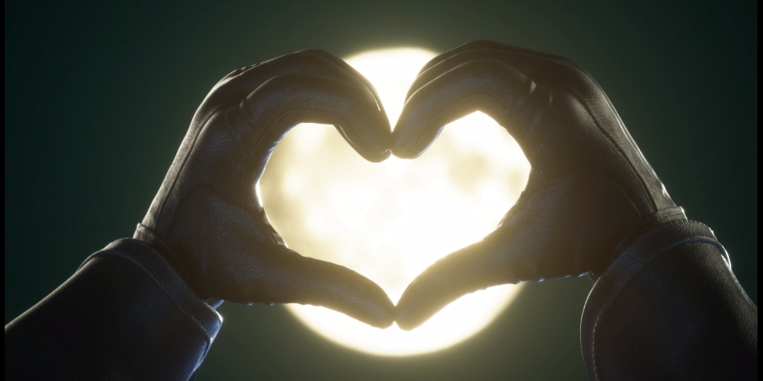
Dans l’univers de Kingdom Hearts, l’origine des mondes remonte à la création de Kingdom Hearts, une source primordiale d’énergie. Cette source est créée à partir du cœur de l'univers et contient à la fois la lumière et les ténèbres. Tout a commencé avec l’apparition de la Lumière, une force bénéfique, et des ténèbres, une force destructrice et corruptrice.
Le premier événement marquant est la création des Keyblades, des armes liées au pouvoir des cœurs et à l’équilibre entre la lumière et les ténèbres. Elles sont forgées et protégées par des Gardiens de la Lumière, des êtres capables de contrôler cette arme et de maintenir l’équilibre entre ces forces.
L'Origine des Conflits
(Kingdom Hearts X Back Cover)
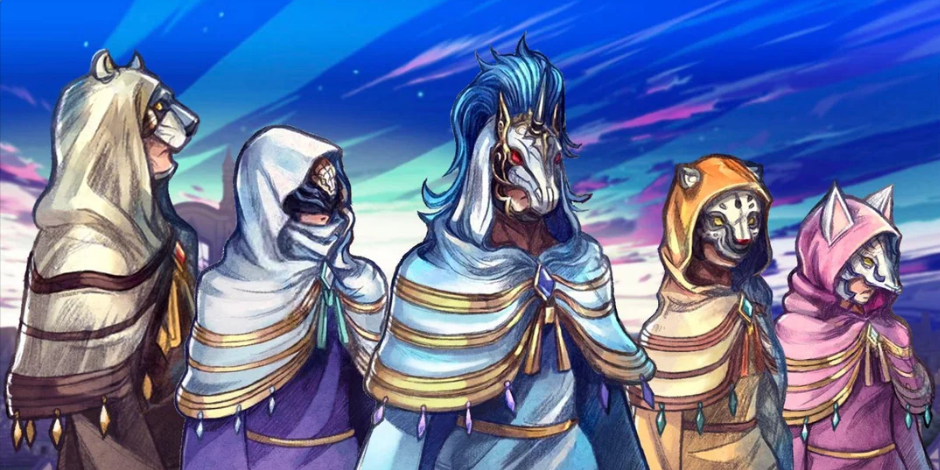
L'histoire de Kingdom Hearts χ se déroule bien avant l’arrivée de Sora et se passe à une époque où plusieurs Légendaires Maîtres de la Keyblade se battent pour maintenir l’équilibre du monde. L’histoire se déroule sur l’ère des Keyblade Wielders, une époque de paix qui finit par se transformer en guerre.
Les Keyblade Wielders étaient divisés en différentes Unions, dirigées par des maîtres appelés Les Foretellers (Les Devins). Chaque Union était liée à une couleur spécifique et avait pour but de protéger les Lux, des fragments de lumière. Les Foretellers, qui possédaient une connaissance prémonitoire de l’avenir, se battaient contre les ténèbres grandissantes.
Le grand conflit naît quand certains des Foretellers commencent à soupçonner que la clé de la guerre réside dans le cœur lui-même, c'est-à-dire dans l'arme légendaire qu’est la Keyblade.
La Guerre des Keyblades
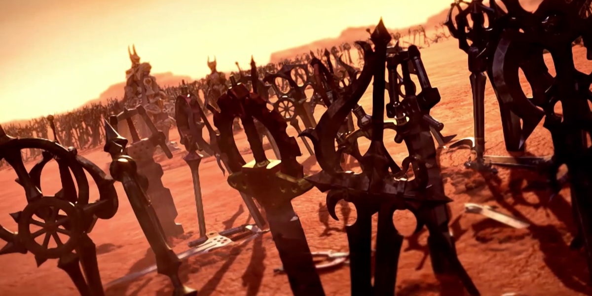
Les tensions grandissent entre les Unions et mènent à un conflit majeur, connu sous le nom de La Guerre des Keyblades. Les Keyblades étaient capables d’ouvrir la porte du Kingdom Hearts, qui renferme une source de pouvoir immense. Les ténèbres tentaient de prendre cette clé pour se libérer et plonger l’univers dans la destruction.
C’est au cours de cette guerre que les ténèbres commencent à se répandre massivement, menaçant les Lux (lumières) qui étaient censées maintenir l'équilibre. Les ténèbres ont dévoré des âmes, et un événement tragique se produit : les Keyblades se battent pour l'accès à Kingdom Hearts, et des Gardiens de la Lumière finissent par sombrer dans les ténèbres, formant des Sans-Cœurs.
Au final, la guerre aboutit à un désastre majeur. Le Kingdom Hearts est scellé, et la balance entre la lumière et les ténèbres est brisée. La Keyblade, l’arme légendaire capable de sceller ou d'ouvrir le Kingdom Hearts, est fragmentée en plusieurs morceaux, et l'ordre des Keyblade Wielders est anéanti.
Luxu, l'un des Foretellers, a survécu à la guerre et porte l'un des Fragments de la Keyblade, un artefact qui restera tout au long de l’histoire pour guider les événements futurs.
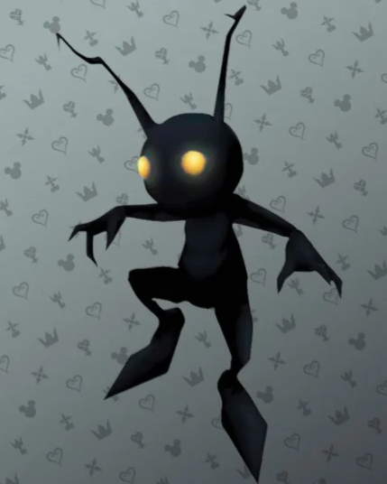
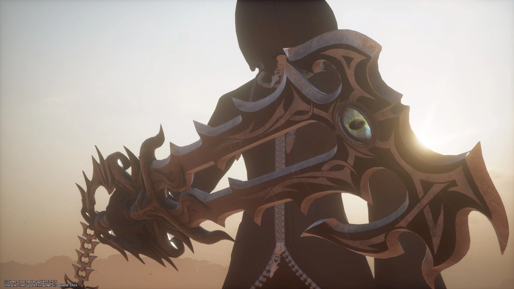
L’Héritage des Keyblade Wielders
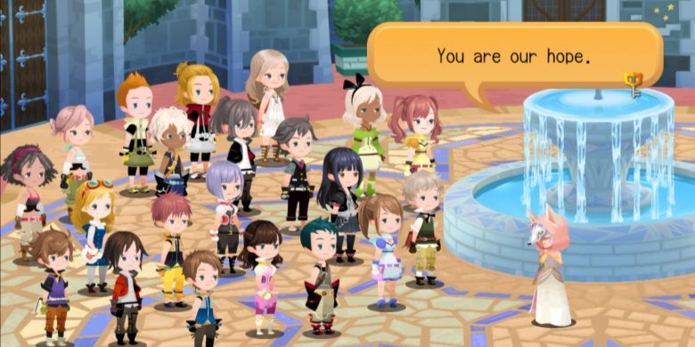
Après la Guerre des Keyblades, l'univers est plongé dans un état de chaos. Les Keyblade Wielders originaux ont été soit détruits soit dispersés. Cependant, un petit groupe de survivants a cherché à restaurer l’équilibre, dont Luxu
Le jeu explore l’idée de l’héritage de l’ancien monde et des dernières héritiers des Keyblades. C’est là que de nouveaux personnages apparaissent, comme Brain et Strelitzia, et qu'un conflit mystérieux entre les Keyblade Wielders et un nouvel ennemi surnommé Darkness commence à prendre forme.
Les Lux (lumières) sont quasi anéantis, et les ténèbres commencent à dominer. Le Kingdom Hearts est scellé, et le pouvoir de la Keyblade reste une source d’ambiguïté, de lutte et de conflit.
Luxu prend un rôle central en cherchant à découvrir le vrai but de Kingdom Hearts, ce qui deviendra essentiel dans les événements qui se dérouleront des siècles plus tard.
De nouveaux espoirs
(Kingdom Hearts Birth by Sleep)
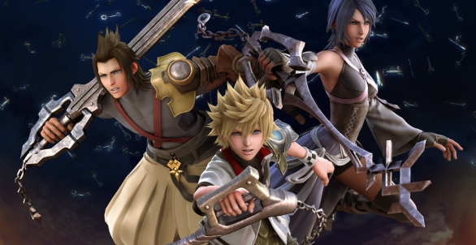
L'histoire continue en se centrant sur trois personnages principaux : Terra, Aqua et Ventus. Ils sont les nouveaux Keyblade Wielders et ont été formés par Maître Eraqus, l’un des derniers grands Maîtres de la Keyblade, qui décide de leur transmettre son savoir et son pouvoir, et leur enseigner l’importance de protéger les mondes.
Terra et Aqua sont ses élèves principaux. Ils grandissent ensemble sous sa tutelle et deviennent de puissants porteurs de Keyblade.
Eraqus a pour mission d’entraîner ces trois jeunes afin qu’ils deviennent de véritables Maîtres de la Keyblade et qu’ils continuent à défendre les mondes contre les ténèbres.
Des visions opposées
Bien que Xéhanort soit le meilleur ami d'Eraqus, a une vision opposée. Obsédé par l’idée que l’équilibre entre lumière et ténèbres est essentiel, il croit que la lumière seule ne peut pas régner. Il pense qu’un événement cataclysmique, comme la Guerre des Keyblades, est nécessaire pour restaurer cet équilibre et recréer le Kingdom Hearts, la source ultime du pouvoir.
Pour accomplir ce plan, Xehanort met en place plusieurs machinations :
• Créer la χ-blade (prononcé "keyblade") : Une arme légendaire capable d’ouvrir le Kingdom Hearts. Pour cela, il a besoin d’un être capable de contenir à la fois une lumière pure et des ténèbres pures.
• Manipuler les apprentis d’Eraqus : Xehanort cible Terra, Aqua, et Ventus, les utilisant pour ses plans.
Manipulation
Ventus
- Avant les événements de Birth by Sleep, Ventus était l’apprenti de Xehanort. Xehanort a tenté de forger en lui la χ-blade, mais le cœur de Ventus était trop faible pour supporter les ténèbres.
- Xehanort extrait les ténèbres de son cœur, créant une entité appelée Vanitas. Ventus est laissé dans un état comateux, et Xehanort l’amène à Maître Eraqus pour qu’il récupère. Cependant, Ventus reste essentiel au plan de Xehanort car il est la moitié de la χ-blade (la lumière pure).
Terra
- Terra est un jeune homme puissant, mais il lutte avec des ténèbres internes qu’il ne contrôle pas toujours. Xehanort voit en lui un futur hôte pour son propre cœur.
- Il manipule Terra en exploitant son désir de devenir plus fort. Xehanort pousse Terra à douter d’Eraqus, lui faisant croire que le maître ne lui fait pas confiance à cause de son lien avec les ténèbres.
Aqua
- Aqua est loyale à Eraqus et représente la lumière pure. Xehanort ne la manipule pas directement, mais il sait qu’elle cherchera à protéger ses amis, ce qui la distraira de ses véritables objectifs.
- Elle devient malgré elle le lien émotionnel qui maintient le trio uni, ce qui complique la situation lorsqu’ils se retrouvent confrontés les uns aux autres.
Début d'un Conflit
Le conflit commence lorsque Xehanort pousse Terra, Aqua, et Ventus à s’opposer à Eraqus et entre eux-mêmes. Voici comment cela se développe :
- La trahison envers Eraqus :
Quand Eraqus découvre que Xehanort veut utiliser Ventus pour créer la χ-blade, il décide de tuer Ventus pour empêcher ce plan.
Terra, manipulé par Xehanort, s’interpose pour protéger Ventus. Cela mène à un combat tragique entre Terra et son maître, où Eraqus est vaincu.
- La confrontation à la Nécropole des Keyblades :
Xehanort attire les trois héros à la Nécropole des Keyblades, un champ de bataille emblématique de la Guerre des Keyblades.
Là, il force Ventus à affronter Vanitas, tandis que Terra doit combattre Xehanort. Aqua est prise au piège, tentant désespérément de sauver ses amis.
- Les conséquences tragiques :
Ventus fusionne avec Vanitas pour former la χ-blade, mais Aqua parvient à la détruire. Cela laisse Ventus dans un état comateux, et son cœur se lie à celui de Sora pour survivre.
Terra est vaincu par Xehanort, qui prend possession de son corps pour devenir Terra-Xehanort.
Aqua tente de sauver Terra, mais elle est piégée dans le Royaume des Ténèbres en sacrifiant sa propre liberté.
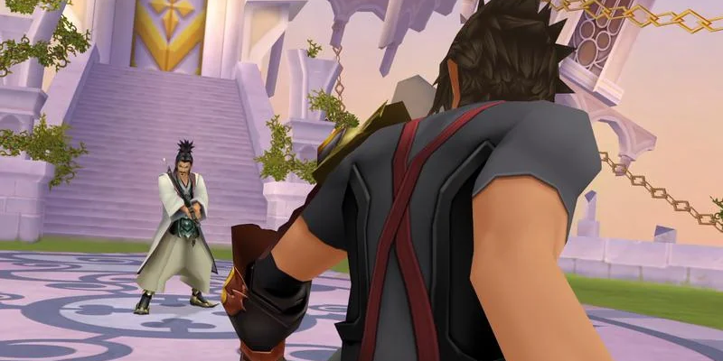
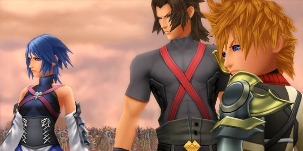
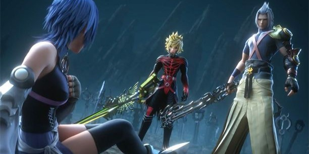
L'arrivée de notre Héro
(Kingdom Hearts I)
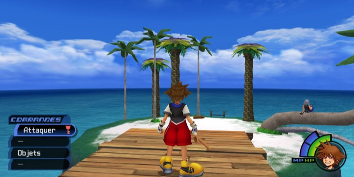
L'histoire se centre enfin sur notre héro principal : Sora et ses deux meilleurs amis Riku et Kairi. Il mènent une vie paisible sur l'île du Destin, un petit monde isolé et rêvent d’aventure et de découvrir ce qui se trouve au-delà de leur monde. Ils ont pour but de construire un radeau pour voyager ensemble.
Mais leur monde se retrouve soudainement envahi par les ténèbres et est détruit par des Sans-Cœurs, des créatures représentant les ténèbres des cœurs perdus.
Pendant cette attaque, Riku, attiré par la puissance des ténèbres, disparaît dans un portail sombre, laissant entendre qu'il les accepte volontairement, le coeur de Kairi quitte son corps, qui disparait peu de temps après, et Sora reçoit mystérieusement la Keyblade, une arme légendaire qui choisit son porteur pour protéger la lumière et combattre les ténèbres.
Début d'une aventure
Le monde de l’île du Destin est détruit, et Sora est transporté dans un nouveau monde, Traverse Town, où il découvre qu’il existe de nombreux mondes connectés. Son objectif devient clair : retrouver ses amis perdus et comprendre ce qui se passe.
Mais lors de sa visite à Traverse Town, Sora rencontre Donald et Dingo, envoyés par le roi Mickey, qui ont pour mission de trouver la Keyblade et son porteur. Ensemble, ils formeront une équipe et voyageront de monde en monde pour protéger les cœurs des mondes (leur essence vitale) des Sans-cœur.
A travers son aventure, Sora découvre divers mondes, inspirés des univers Disney (comme le Pays des Merveilles, Agrabah, ou Atlantica), et chacun est menacé par les Sans-cœur. Il se lie d'amitié avec les héros de ses mondes tels que Tarzan, Aladin ou encore Ariel en les aidant dans leurs quêtes peronnelles.
Sora comprends finalement que les Sans-cœur obéissent à Maléfique, une sorcière maléfique qui manipule les ténèbres et recrute des méchants Disney pour l’aider. Elle cherche à capturer les Princesses de Cœur, des individus au cœur pur, pour ouvrir la porte du Kingdom Hearts.
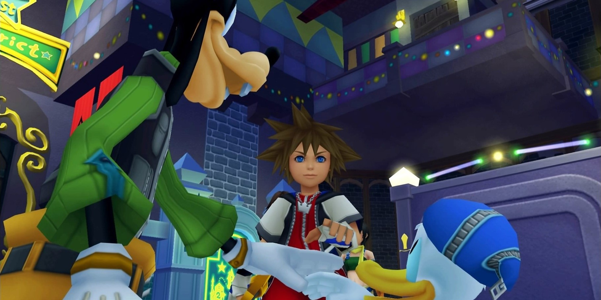
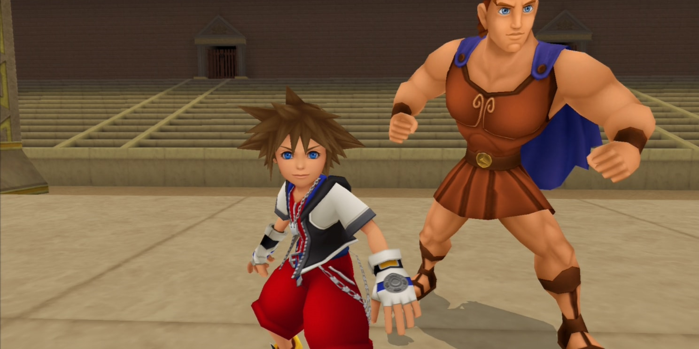
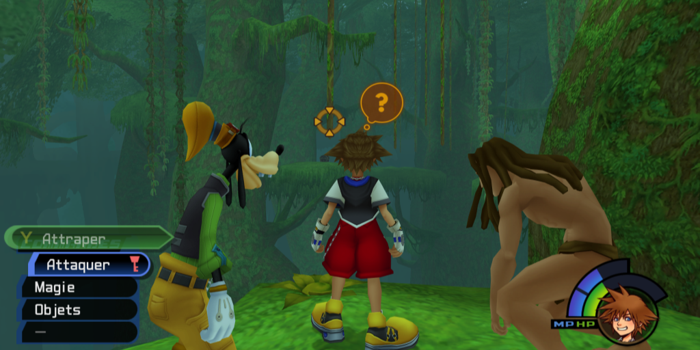
Retrouvailles tragiques
Au cours de son voyage, Sora retrouve Riku, mais ce dernier n’est plus le même. Sous l’influence de Maléfique, Riku est convaincu que Sora l’a remplacé avec Donald et Dingo. Il croit qu’il doit utiliser les ténèbres pour devenir plus fort et sauver Kairi.
Kairi, quant à elle, est retrouvée dans un état comateux. Son cœur est perdu, et son corps ne peut pas se réveiller.
Riku devient un antagoniste tragique, luttant entre son envie de sauver ses amis et son ambition, qui le pousse vers les ténèbres.
Finalement, on découvre que Maléfique n’est pas la véritable menace. Elle est manipulée par Ansem, le principal antagoniste du jeu. Ansem est une entité née des ténèbres, ayant sacrifié son propre corps pour rechercher les secrets du Kingdom Hearts, qu’il croit être une source infinie de ténèbres.
Ansem utilise le corps de Riku comme hôte pour poursuivre son plan.
Il révèle que le cœur de Kairi se cache à l’intérieur de Sora depuis la destruction de l’île du Destin. C’est pour cette raison que Kairi est dans un état comateux.
Sora, Donald, et Dingo arrivent à Hollow Bastion, la forteresse où tout se joue. Sora combat et vainc Riku, désormais possédé par Ansem.
Pour restaurer Kairi, il se sacrifie en utilisant la Keyblade pour libérer son cœur, devenant brièvement un Sans-cœur. Ce geste réveille Kairi, qui sauve Sora en lui rendant son cœur.
Le climax : la Porte des Ténèbres
Le combat final se déroule au Kingdom Hearts, une porte gigantesque qui mène à une dimension d'énergie pure.
Ansem est persuadé que le Kingdom Hearts contient les ténèbres ultimes, une source infinie de pouvoir obscur qu’il souhaite utiliser pour plonger tous les mondes dans les ténèbres.
Cependant, lorsqu'il ouvre la porte du Kingdom Hearts, il est surpris de découvrir que le cœur de ce royaume est composé de lumière pure.
Cette lumière le détruit immédiatement, car Ansem est une entité entièrement liée aux ténèbres. Il ne peut pas survivre face à une lumière aussi intense.
Pour empêcher les ténèbres de se répandre, Sora et Riku collaborent pour fermer la porte. De l’autre côté, le roi Mickey et Riku restent dans les ténèbres pour verrouiller la porte de l’intérieur, promettant de trouver un moyen de revenir.
Kairi retourne sur l’île du Destin, mais Sora et Riku sont séparés, coincés dans des dimensions différentes.
Sora promet de retrouver Riku et Mickey, et de réunir leurs cœurs, peu importe le temps que cela prendra.
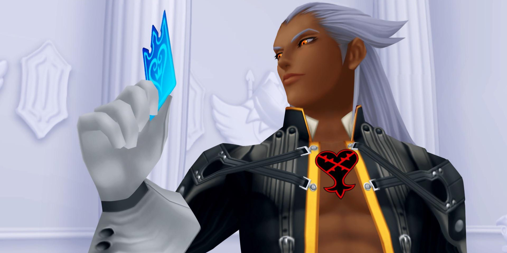
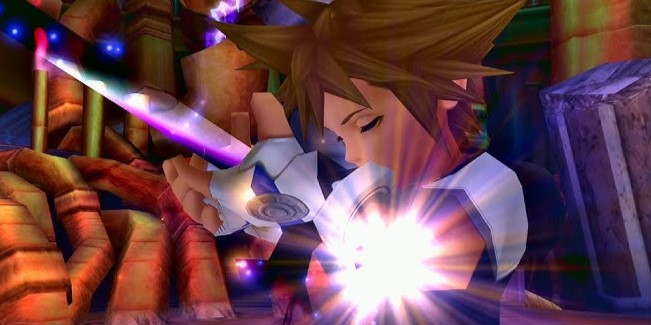
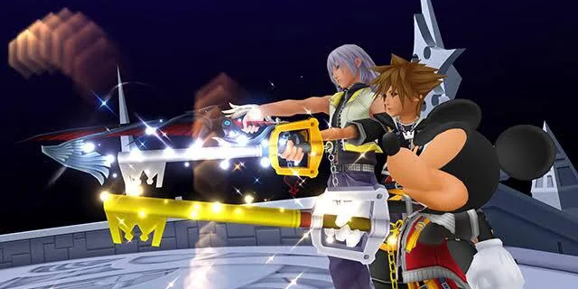
Le Plan pour Réveiller Sora
(Kingdom Hearts 358/2 Days)
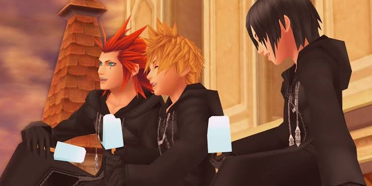
Pendant le sommeil de Sora pour retrouver ses souvenirs, l'histoire se centre sur de nouveaux personnages principaux : Roxas, Axel et Xion.
Kingdom Hearts 358/2 Days se situe chronologiquement entre les événements de Kingdom Hearts I et Kingdom Hearts II, avec une partie qui chevauche légèrement Chain of Memories.
Roxas est créé à la fin de Kingdom Hearts I, quand Sora se transperce le cœur avec la Keyblade des cœurs humains pour libérer Kairi. En perdant son cœur, Sora génère deux entités : Roxas, son Simili, formé à partir de son corps vide, et Naminé, un être particulier créé par les circonstances uniques impliquant Sora et Kairi.
Roxas est rapidement recruté par l’Organisation XIII, qui voit en lui un atout précieux à cause de sa capacité à manier une Keyblade, essentielle pour collecter des cœurs. Roxas, amnésique et confus, accepte sans poser de questions.
Roxas commence alors à travailler pour l’Organisation XIII, effectuant des missions dans différents mondes pour détruire les Sans-Cœurs et récupérer leurs cœurs. Cela alimente la construction du Kingdom Hearts artificiel de l’Organisation.
Pendant ses missions, il se lie d’amitié avec Axel et plus tard avec Xion, une mystérieuse 14ᵉ membre de l’Organisation. Xion se révèle être une marionnette créée artificiellement par Xemnas à partir des souvenirs volés de Sora. Elle est une "copie" destinée à remplacer Roxas si jamais il devenait instable.
Les conflits internes
Mais au fil du temps, Roxas commence à douter des véritables intentions de l’Organisation XIII, et Xion découvre sa véritable nature et se rend compte que son existence affaiblit Roxas et retarde le réveil de Sora.
Les trois amis se retrouvent dans un dilemme déchirant, car leurs liens sont forts, mais leur existence est en conflit direct avec celle de Sora.
Xion choisit finalement de retourner à Sora, acceptant que cela signifie sa propre disparition. Elle affronte Roxas dans un combat final, espérant l’inciter à quitter l’Organisation. Après sa défaite, elle s’efface de l’existence, et tout le monde oublie son existence passée, sauf Roxas, qui reste hanté par sa perte.
Peu après, Roxas se rebelle contre l’Organisation XIII, refusant de continuer à servir leurs ambitions. Cela conduit à un combat entre lui et Riku. Riku, sous ordre de DiZ (Ansem le Sage sous une fausse identité), capture Roxas et l’amène dans un programme numérique (la Ville de Crépuscule virtuelle) où il sera maintenu en stase jusqu’à ce que Sora ait récupéré tous ses souvenirs.
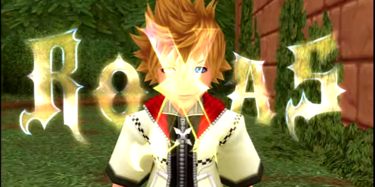
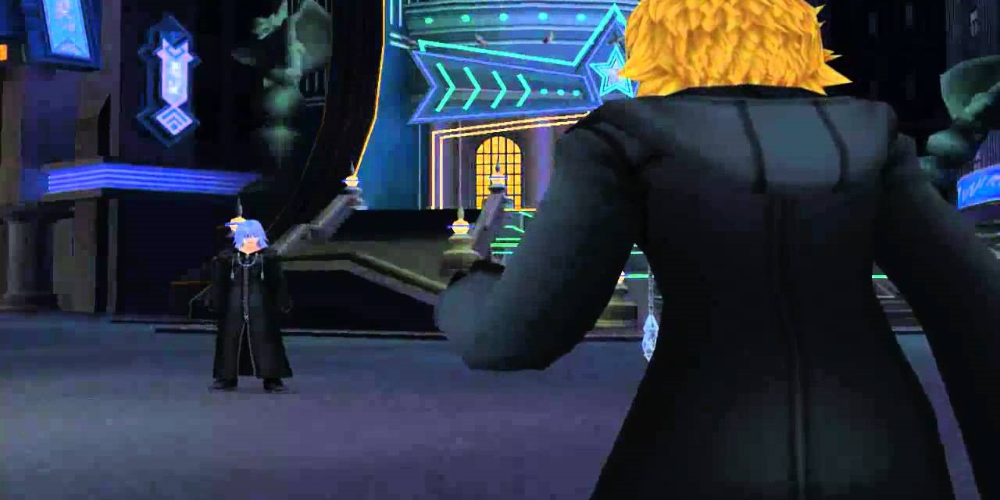
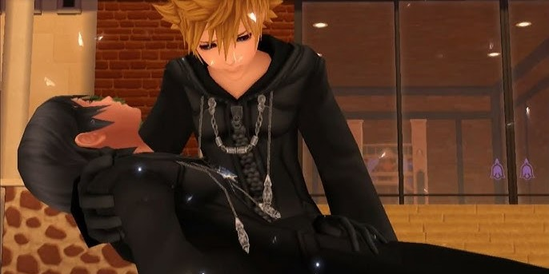
Le réveil de Sora
(Kingdom Hearts II)
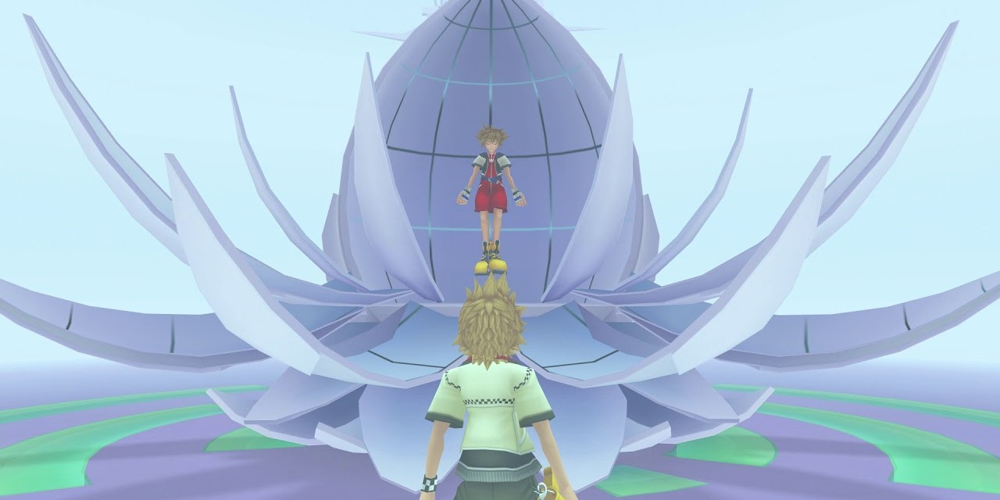
Le jeu commence dans la Ville de Crépuscule, où nous suivons Roxas.
A ce moment là, Roxas a perdu tout ses souvenirs, c'est désormais un garçon ordinaire qui vit des moments étranges : il a des visions, et des créatures mystérieuses (les Similis) le pourchassent.
Au fil des jours, Roxas découvre progressivement la vérité sur sa nature et son rôle et comprends qu'il a été plongé dans la simulation informatique par DiZ pour éviter que l’Organisation XIII ne le récupère et n’interfère avec le réveil de Sora.
Après une confrontation avec Axel (son ancien ami de l'Organisation XIII) qui lui a rendu visite, Roxas accepte son sort et fusionne avec Sora pour le réveiller. Sora, Donald, et Dingo sortent alors du long sommeil provoqué par Naminé à la fin de Chain of Memories.
la menace de l’Organisation XIII
Sora et ses amis reprennent leur aventure, cette fois pour arrêter l’Organisation XIII, un groupe composé de Similis, dirigé par Xemnas (le Simili d’Ansem/Xehanort). L'objectif de l'Organisation est de collecter des cœurs pour créer leur propre Kingdom Hearts, une source infinie de pouvoir, qui leur rendrait leurs émotions.
Sora parcourt de nombreux mondes Disney, rétablissant l’équilibre entre lumière et ténèbres tout en affrontant les membres de l’Organisation XIII, tels que Demyx, Xaldin, et Saïx. Pendant ce temps, Sora cherche désespérément Riku et Kairi, qui ont disparu depuis les événements du premier jeu.
Au fil de l’histoire, Sora découvre peu à peu la vérité sur Roxas et son propre passé. Il apprend :
Que Roxas est une partie de lui-même, créée quand il a perdu son cœur, que Roxas et Naminé ont des liens profonds avec les forces de lumière et de ténèbres, mais aussi une connexion unique avec lui et Kairi, et que Riku a joué un rôle crucial en capturant Roxas pour permettre à Sora de se réveiller.
Le combat contre Xemnas
L’Organisation XIII réussitcfinalement à rassembler suffisamment de cœurs pour créer une version incomplète du Kingdom Hearts. Cela conduit à un affrontement final entre Sora, ses alliés, et Xemnas dans le Monde qui n’a jamais été, le siège de l’Organisation XIII.
Après la défaite de Xemnas, Sora et Riku se retrouvent dans une mer obscure, pensant qu’ils sont coincés pour toujours. Cependant, une lettre dans une bouteille de Kairi les guide vers une lumière, leur permettant de rentrer chez eux.
Le jeu se termine avec Sora, Riku, et Kairi réunis sur l’île du Destin, reprenant leur vie normale, bien que Sora sente que leur aventure n’est pas totalement terminée.
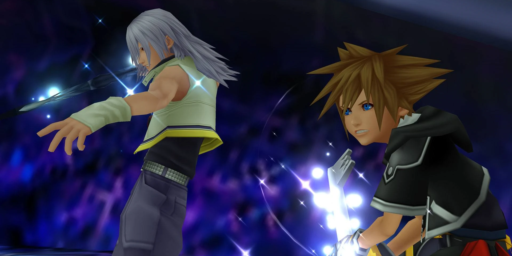
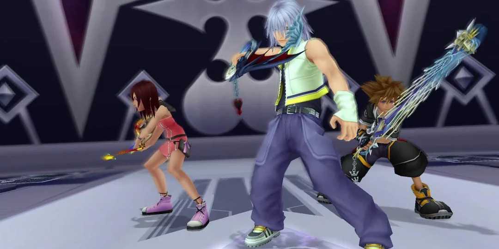
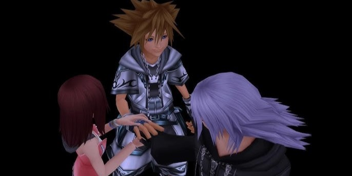
Nouvelle menace & L'épreuve de Symbole de Maîtrise
(Kingdom Hearts Dream Drop Distance)
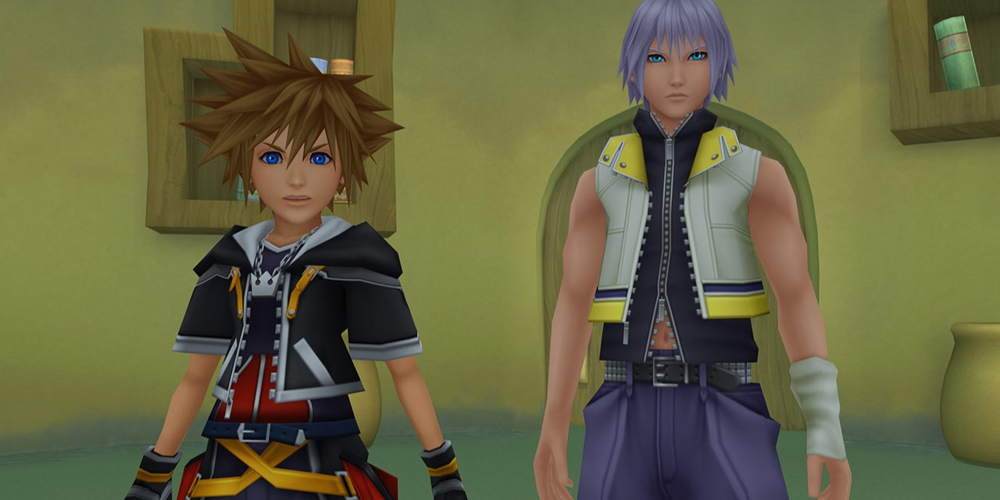
L’histoire se concentre sur Sora et Riku, qui entreprennent l’Épreuve de Symbole de Maîtrise (Mark of Mastery) sous la supervision de Maître Yen Sid. Cette épreuve vise à les préparer à devenir des Maîtres de la Keyblade, capables de protéger les mondes contre la renaissance imminente de Xehanort.
L’Épreuve et les mondes endormis
Sora et Riku voyagent dans les mondes endormis (Dream Worlds), des mondes tombés dans un état de sommeil après avoir été détruits par les Sans-Cœurs.
Leur mission est de réveiller ces mondes en fermant leurs Serrures du Sommeil (Keyholes of Sleep). Ils se battent contre des ennemis appelés Esprits Oniriques (Dream Eaters), répartis en deux catégories : cauchemars (hostiles) et esprits (alliés).
Les deux héros progressent en parallèle dans des versions similaires mais distinctes des mondes endormis.
Le retour de Xehanort
Ils découvrent que Jeune Xehanort, une version plus jeune du maître manipulateur, voyage à travers le temps grâce à une technique complexe basée sur les souvenirs.
Le but du jeune Xehanort est de réunir les 13 réceptacles de ténèbres, composés de Xehanort lui-même et de ses diverses incarnations, pour affronter les 7 Gardiens de la Lumière lors d’une guerre finale pour contrôler Kingdom Hearts.
Sora tombe dans un piège tendu par Xehanort et est plongé dans un sommeil profond. Son cœur est corrompu par les ténèbres.
Riku, quant à lui, démontre son progrès en affrontant ses propres ténèbres et en sauvant Sora depuis l’intérieur de son cœur.
À la fin, Riku réussit l’épreuve et est nommé Maître de la Keyblade, tandis que Sora échoue en raison de sa vulnérabilité face aux ténèbres, mais reste déterminé à s’améliorer pour sauver ses amis et protéger les mondes.
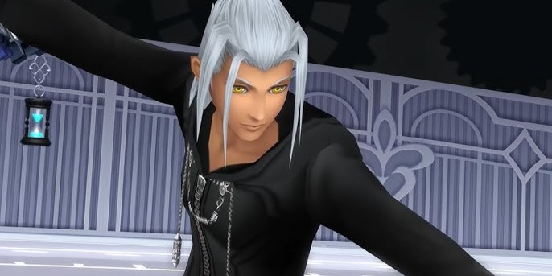
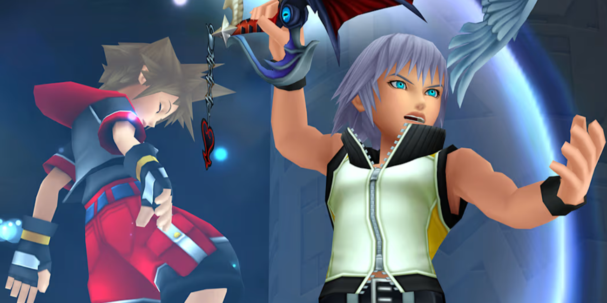
L'affrontement final
(Kingdom Hearts III)
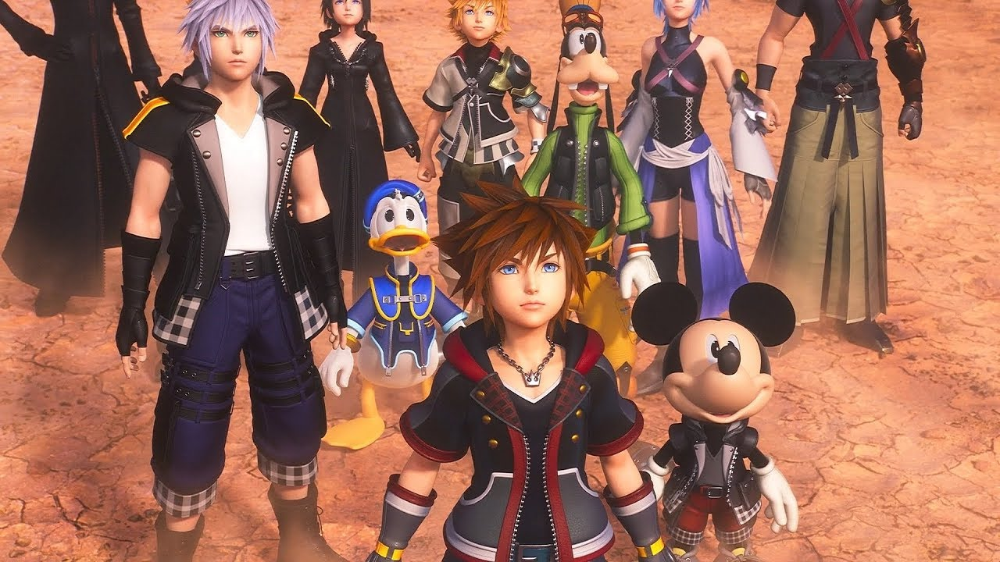
Après son échec à l’Épreuve de Symbole de Maîtrise, Sora part en quête de la Puissance du Réveil, une capacité spéciale qui lui permettra de restaurer les cœurs perdus, comme celui de Roxas.
Accompagné de Donald et Dingo, il visite de nombreux mondes Disney pour trouver des indices sur cette capacité.
Récupération d'alliés
Riku et Mickey partent dans le Royaume des Ténèbres pour sauver Aqua, qui est perdue depuis les événements de Birth by Sleep. Après une lutte difficile, elle est sauvée et retourne dans la Lumière.
Aqua aide ensuite Sora à réveiller Ventus, qui était endormi dans la Chambre du Sommeil, située dans le Manoir Obscur.
Terra, quant à lui, est récupéré après avoir été manipulé par Xehanort pendant des années. Ses amis réussissent à libérer son cœur de l’influence de Xehanort.
La Bataille Finale
La team affronte les 13 Ténèbres, qui incluent Xehanort et ses diverses incarnations.
Roxas, qui avait fusionné avec Sora, est restauré grâce à la Puissance du Réveil. Il retrouve son propre corps à l'aide de l'ordinateur de Radiant Garden et des efforts de ses amis.
Xion, qui avait été oubliée par tous à cause des manipulations de l'Organisation XIII, est ramenée par Xemnas pour rejoindre les 13 Ténèbres. Lors de la bataille, ses souvenirs reviennent grâce à Sora et Roxas, et elle choisit de rejoindre les Gardiens de la Lumière.
Lea (anciennement Axel), qui avait commencé à s'entraîner à manier une Keyblade, se bat aux côtés de Sora et ses amis, montrant son dévouement envers Roxas et Xion.
La bataille se déroule dans la Nécropole des Keyblades, où une nouvelle tentative de guerre des Keyblades est initiée.
Sora, aidé par ses alliés et les esprits des anciens porteurs de Keyblades, combat Xehanort dans un combat épique.
Avec l'aide de ses amis, Sora affronte Xehanort dans un duel final. Xehanort est finalement scellé, et Kingdom Hearts est fermé pour rétablir l'équilibre entre la Lumière et les Ténèbres.
Après la bataille, Xehanort est vaincu, mais Kairi est tuée au cours de l’affrontement. Refusant d'accepter cette perte, Sora décide de partir à sa recherche.
Selon lui, kairi se trouverait dans "le monde final".
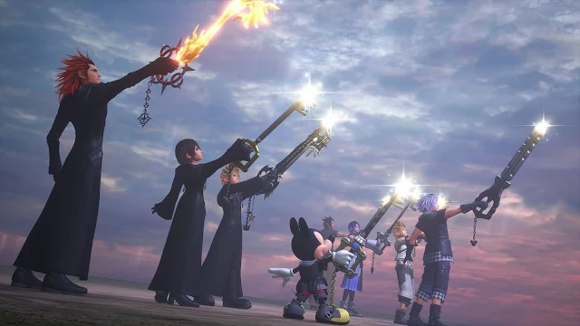
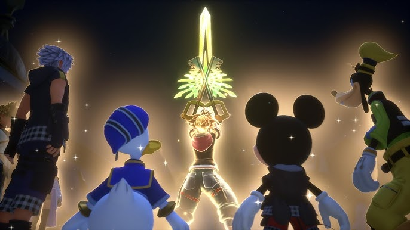
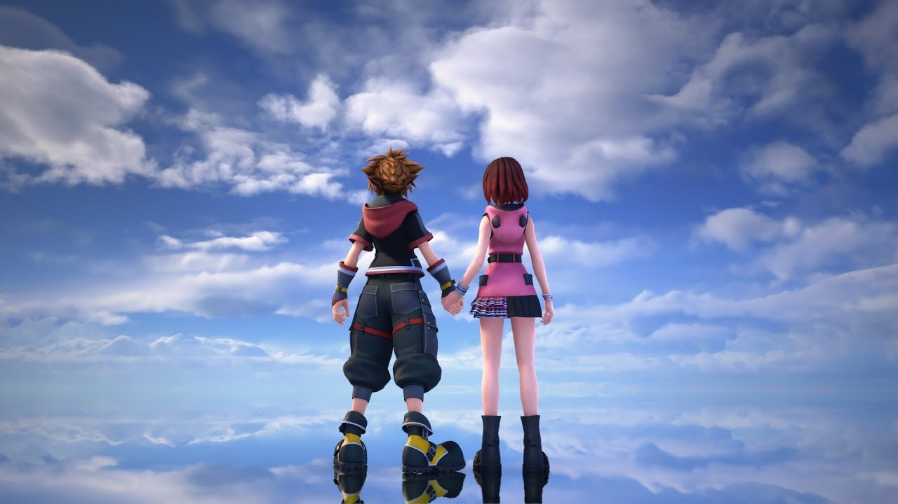
La fin de Kingdom Hearts III est assez floue et enigmatique pour le moment.
On peut comprendre que Sora finit bien par retouver et sauver Kairi, mais il disparait. La question qui se pose alors est : Ou est passé Sora ?
La scène secrète est divisée en deux parties : Sora apparaît à Shibuya, probablement tiré de The World Ends With You, tandis que Riku se retrouve à Shinjuku, dans le monde de Verum Rex. Ce dernier est lié à Yozora, que l'on voit au sommet du siège du gouvernement métropolitain de Tokyo. Enfin, un personnage vêtu de noir forme un cœur avec ses mains en regardant la lune, laissant supposer qu’il pourrait être le Maître des Maîtres..
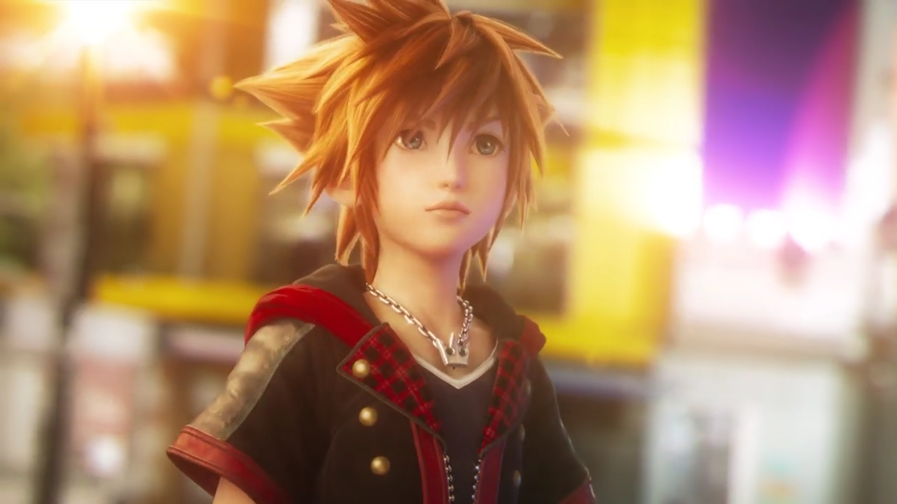
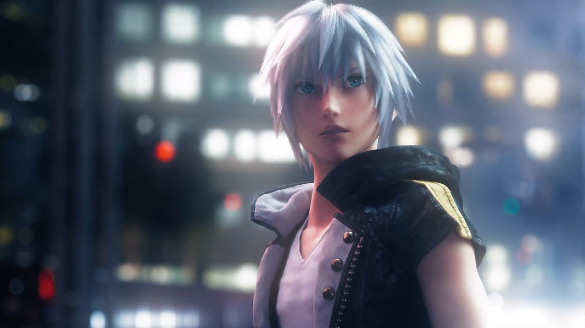
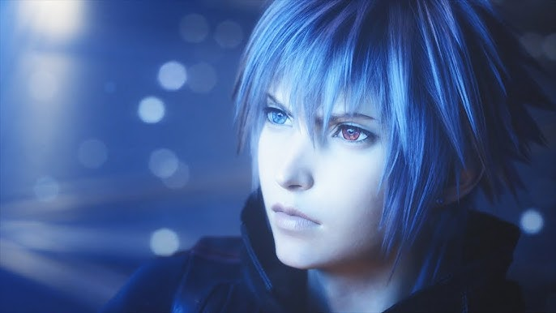